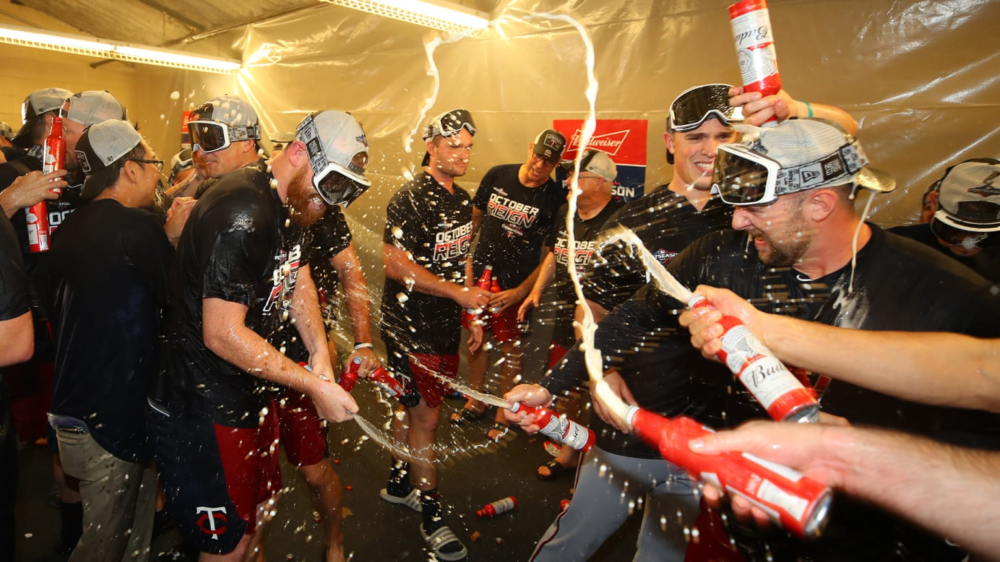

Top Moments
The 2019 Twins were projected by most to finish second to the Cleveland Indians in the American League Central. Spurred by breakout years from much of their young core, they instead finished with 101 wins and their first division title since 2010.

Postseason Content
The Twins drew a first-round matchup against the New York Yankees in the American League Division Series and were swept out of the postseason. Their 16-game playoff losing streak matches the longest in the history of American "Big Four" sports.

Mailbags
Longtime fans of the Twins (and really, those that have paid close attention) know that Monday off-days are generally the time for the Twins Mailbag at MLB.com. Questions can be submitted on Twitter or via email.

Season in Review
Beginning with a series of "exit interviews" focused on the Twins' key players in 2019 and '20, we take a look back at how the pieces fit together last season and what the future might hold for some of those players.